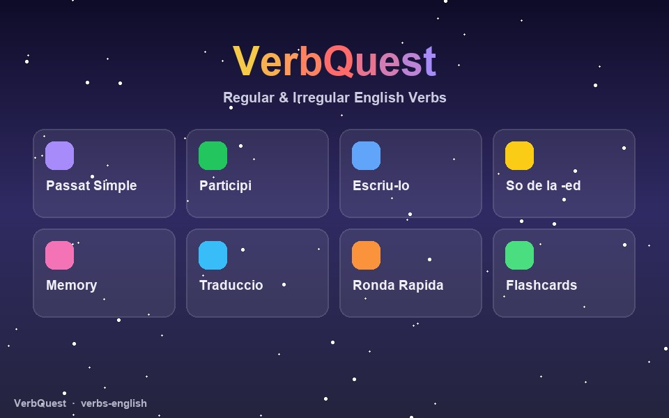

Go, went, gone: els verbs irregulars en anglès, derrotats un a un.

La llista de verbs irregulars és el drac que tot estudiant d'anglès ha de vèncer tard o d'hora. VerbQuest la converteix en una missió: vuit modes de joc diferents per treballar els verbs regulars i irregulars des de totes les direccions — reconèixer-los, escriure'ls, escoltar-los i encadenar-los.
Cada verb es pot escoltar amb pronunciació britànica sintetitzada i inclou la seva transcripció fonètica IPA, de manera que l'alumne no només l'escriu bé: també el diu bé. La interfície es pot posar en català o en anglès.
Els sis perfils permeten compartir dispositiu a l'aula, i el progrés de cadascú queda desat al navegador. Gratuït i sense registre, com tota la col·lecció.